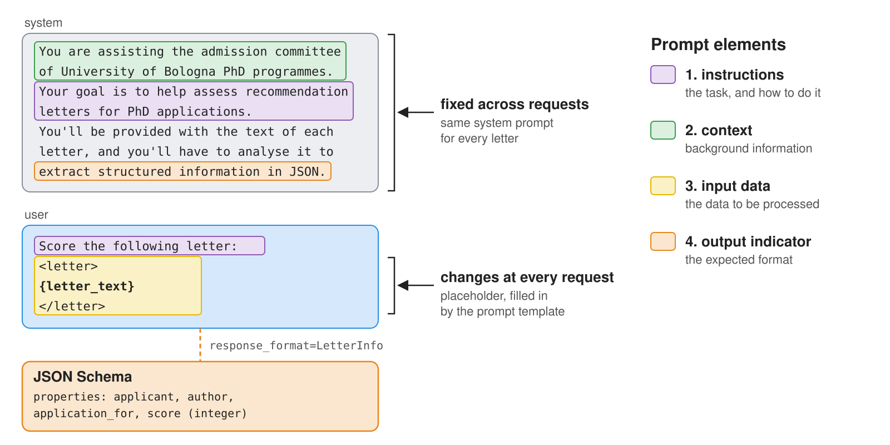
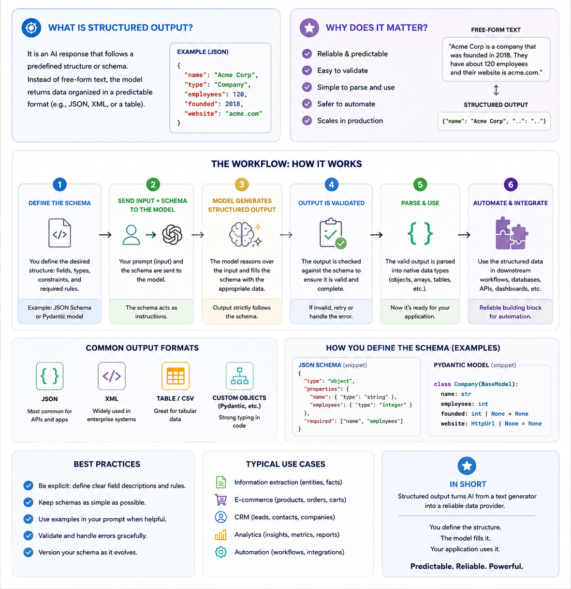
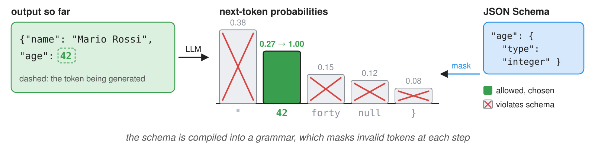
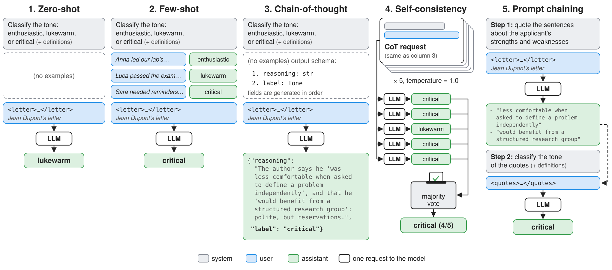
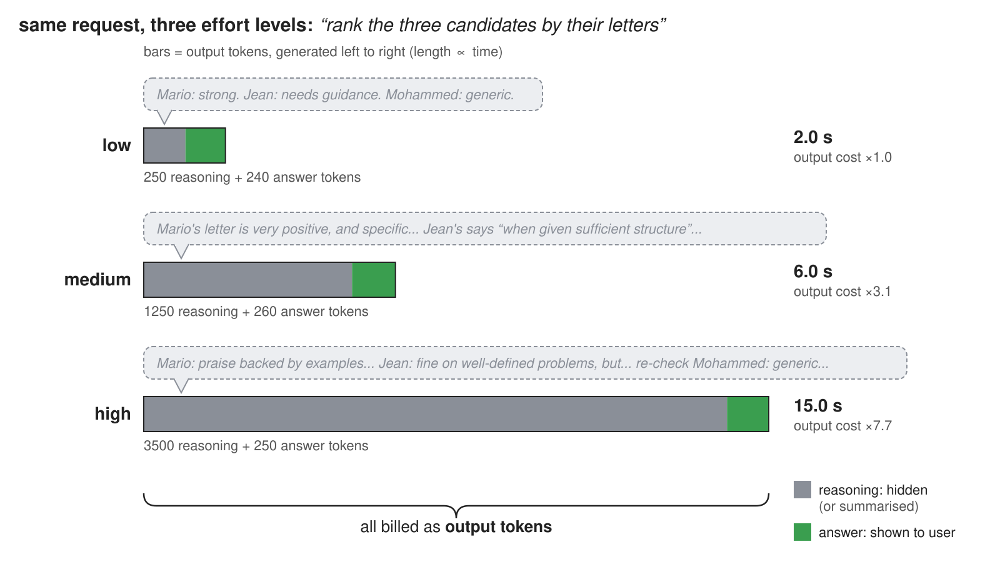
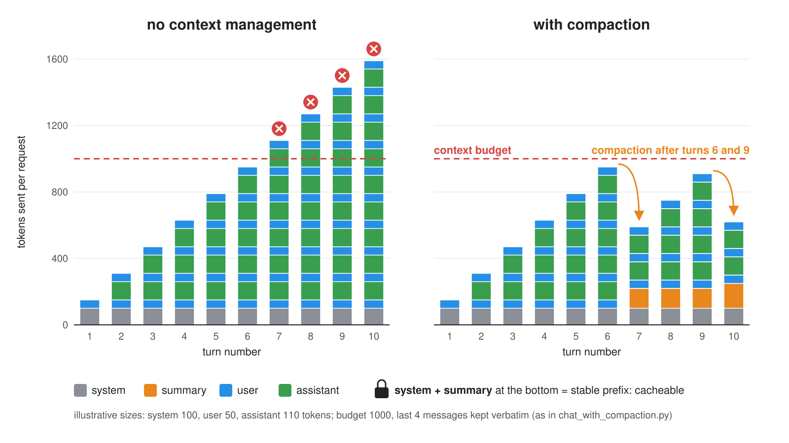

Prompt Engineering & Structured Outputs
Intelligent Agents — Module 2
A.Y. 2026/2027
Giovanni Ciatto
Compiled on: 2026-10-01 — printable version
Outline
- Anatomy of a prompt: what a prompt is made of, and some general best practices
- Structured outputs: how to get machine-readable responses out of LLMs
- first with OpenAI’s client library, then with LangChain, which we’ll keep using from then on
- Prompting techniques: zero-shot, few-shot, chain-of-thought, self-consistency, prompt chaining
- Reasoning models: models which “think” before answering, and how to control how much they think
- Context management: context windows, token budgets, compaction, prompt caching
- Exercises on the running example: checklist scoring, ID documents extraction
Validating generative software is the topic of the next lecture
Recall: we assume the reader is familiar with the Chat Completion API, and with the notion of prompt templates from previous lectures
What is a prompt? The general concept
-
A prompt is the whole input that is given to an LLM, in order to elicit some desired output
- in the Chat Completion API, it is the list of messages sent in a request (system, user, assistant, …)
- the model sees nothing else: everything it needs to know must be in there
-
Prompt engineering is the practice of designing, testing, and refining prompts, so that the model’s responses become more accurate, consistent, and useful for the task at hand
- it is empirical: there is no theory telling in advance which prompt works best on which model
- hence, it is only meaningful when paired with some form of evaluation (more on this in the next lectures)
-
A prompt is commonly made of four (optional) elements (cf. Prompt Engineering Guide):
- instructions: the task to be performed, and how to perform it (e.g. “score this letter”)
- context: background information that may help the model (e.g. “you are assisting a PhD admission committee”)
- input data: the specific data to be processed (e.g. the text of the letter)
- output indicator: the format or type of the expected output (e.g. “answer in JSON, with fields …”)
Anatomy of a prompt: an intuitive example

- The system prompt commonly contains the stable parts (context, general instructions, output format)
- The user prompt commonly contains the variable parts (input data, specific instructions)
- this separation makes prompts easy to templatize: fixed text + named placeholders filled at runtime
Prompt engineering best practices: the landscape
- Each provider publishes its own prompting guide, and most advice is shared across them:
| Practice | Rationale | Example |
|---|---|---|
| Be clear and specific | the model cannot read your mind | “summarise in 3 bullet points, max 15 words each” vs. “summarise” |
| Give a role / context | narrows down the space of plausible answers | “You are assisting the admission committee of …” |
| Use delimiters | separates instructions from data (and mitigates injection) | <letter> ... </letter>, Markdown headings, triple quotes |
| Say what to do, not only what not to do | negative instructions are followed less reliably | “use plain words” vs. “don’t use jargon” |
| Provide examples | showing is more effective than telling | cf. few-shot prompting |
| Specify the output format | downstream code needs to parse the response | cf. structured outputs |
| Let the model think first | complex tasks benefit from intermediate steps | cf. chain-of-thought and reasoning models |
| Iterate and measure | prompts behave differently across models and versions | keep a set of test inputs with expected outputs |
- Guides also contain model-specific advice (e.g. Claude likes XML tags, reasoning models need less step-by-step guidance)
- prompts are not portable across models: re-test them whenever you switch model
Running example
Admission committee assistant for PhD applications evaluation
-
3 candidates, and as many applications, with their passport, transccript of records, and presentation letter (in natural language)
-
we want to extract structured information from these documents (e.g. name, age, grades, research experience, etc.) to ease evaluation

- Transcript of records
- Presentation letter
- letter is very positive

- Transcript of records
- Presentation letter
- letter contains some criticisms


- Transcript of records
- Presentation letter
- letter is positive but shallow

About Structured Output
TL;DR: forcing the model to produce output in a specific format (e.g. JSON matching a given schema) so that to bring unstructured input data (e.g. natural language) into structured form that can be easily processed by downstream applications (e.g. databases, APIs, etc.)

How to represent target structured format to the model?
-
Natural language description: describe the target format in natural language
- e.g. “the output should be a JSON object with the following fields: name (string), age (integer), email (string), etc.”
-
Example-based description: provide one or more examples of the target format,
- e.g. “the output should look like this:
{ "name": "John Doe", "age": 30, "email": "john.doe@example.com" }
- e.g. “the output should look like this:
-
Schema-based description: provide a formal schema (e.g. JSON Schema) describing the target format, e.g. “the output should match the following JSON Schema (written in YAML for better readability):
type: object properties: name: type: string age: type: integer email: type: string required: [name, age, email] additionalProperties: false -
In strongly-typed programming languages (e.g. Java), client libraries may reverse-engineer the schema from the type definitions in the code, using reflection, or leverage serialization libraries such as Jackson
-
In Python, one can use libraries like
pydanticto define data models with validation logic, and then generate JSON Schemas from them- this is so common, that LLM-aaS Client Libraries (there including
openai) often have built-in support forpydanticmodels
- this is so common, that LLM-aaS Client Libraries (there including
Pydantic classes with documentation strings (pt. 1)
-
Core idea behind
pydanticis to define data models as Python classes extendingpydantic.BaseModel- with type annotations for the fields, also borrowing types from the Python standard library (e.g.
datetime,Optional, etc.)
from typing import Optional from pydantic import BaseModel from datetime import datetime class User(BaseModel): name: str age: int email: Optional[str] = None class Post(BaseModel): title: str content: str author: User timestamp: datetime- one may also have nested data models, optional fields, default values, etc.
pydanticdata model $\approx$ data classes with default validation and serialization logic- automatically implemented constructurs accepting arguments named after the field, with type checking and validation (e.g.
User(name="John Doe", age=30)) - methods to serialize the model to JSON (e.g.
user.model_dump_json()) and to generate JSON Schema (e.g.User.model_json_schema())
- automatically implemented constructurs accepting arguments named after the field, with type checking and validation (e.g.
- with type annotations for the fields, also borrowing types from the Python standard library (e.g.
Pydantic classes with documentation strings (pt. 2)
-
To make the data model understandable to the LLM, one should add documentation strings to the fields, which will be included in the generated JSON Schema as
descriptionfields—also good for setting default values or default factoriesfrom typing import Optional from pydantic import BaseModel, Field # <-- notice the import of Field for adding documentation strings from datetime import datetime class User(BaseModel): """Anagraphical and contact information about a user.""" name: str = Field(..., description="The user's full name") age: int = Field(..., description="The user's age in years") email: Optional[str] = Field(default=None, description="The user's email address") class Post(BaseModel): """A blog post created by a user.""" title: str = Field(..., description="The title of the post") content: str = Field(..., description="The content of the post") author: User = Field(..., description="The author of the post") created_at: datetime = Field(default_factory=datetime.now, description="The date and time when the post was created") -
For instance, the class definitions above would produce the following JSON Schema (formatted in YAML for better readability):
title: Post type: object description: A blog post created by a user. properties: title: description: The title of the post title: Title type: string content: description: The content of the post title: Content type: string author: "$ref": "#/$defs/User" description: The author of the post created_at: description: The date and time when the post was created format: date-time title: Created At type: string required: [title, content, author] "$defs": User: description: Anagraphical and contact information about a user. properties: name: description: The user's full name title: Name type: string age: description: The user's age in years title: Age type: integer email: anyOf: - type: string - type: 'null' default: description: The user's email address title: Email required: - name - age title: User type: object
How is structured output enforced? (pt. 1)
From weakest to strongest guarantees:
-
Prompt-only: describe the format in the prompt, then parse (and validate) the response
- works with any model, yet the output may be malformed (missing fields, extra text, Markdown fences around JSON…)
-
JSON mode (e.g.
response_format={"type": "json_object"}): the output is guaranteed to be valid JSON, but not to match your schema -
Schema-constrained output (e.g.
response_format={"type": "json_schema", ..., "strict": true}): the output is guaranteed to match the JSON Schema- commonly implemented via constrained decoding: at each generation step, tokens that would violate the schema are masked out
- cf. Willard & Louf (2023), and libraries such as Outlines, llguidance, XGrammar

-
Tool-calling trick: declare a (fake) tool whose parameters are the target schema, and force the model to call it
- the tool-call arguments are the structured output (common before providers supported (3))
How is structured output enforced? (pt. 2)
| Provider / tool | How to request schema-constrained output | Docs |
|---|---|---|
| OpenAI (Chat Completion) | response_format={"type": "json_schema", "json_schema": {..., "strict": True}}, or client.chat.completions.parse(response_format=PydanticClass) |
link |
| OpenAI-compatible (e.g. OpenRouter) | same as OpenAI, if the underlying model supports it | link |
| Anthropic (Messages) | output_config={"format": {"type": "json_schema", "schema": ...}}, or strict tool use |
link |
| Google Gemini | JSON mime type + JSON Schema in the request configuration | link |
| Ollama (local) | format=<JSON Schema> in the request |
link |
| LangChain (any of the above) | llm.with_structured_output(PydanticClass) |
link |
- Same concept everywhere: a JSON Schema travels along with the request, and the response is (guaranteed to be) an instance of it
- Different syntax: parameter names and nesting differ across providers, and not all models support all options
- in Python, most client libraries accept
pydanticclasses directly, and convert them into JSON Schemas for you
- in Python, most client libraries accept
[BEWARE] the format is guaranteed to be correct, the content is not: always validate the values
Example 1: Structured Output with Pydantic Classes (pt. 1)
Goal: let’s extract structured information from the candidates’ presentation letters
- In particular:
- information about the applicant (name, strengths, weaknesses, etc.), to see whether the letter is actually positive
- information about the authors of the letter (e.g. name, position, relationship with the applicant, etc.), to see whether the letter is actually credible
- give a reproducible and grounded recipe for scoring the letter based on these aspects
-
Let’s import
openaiand initialize the client as usual:import os from openai import OpenAI base_url = os.environ.get("OPENAI_BASE_URL", "https://openrouter.ai/api/v1/") api_key = os.environ.get("OPENAI_API_KEY") or input(f"Enter your API key for {base_url}: ") model = os.environ.get("OPENAI_MODEL", "openrouter/auto") client = OpenAI(base_url=base_url, api_key=api_key) -
Let’s design a system prompt to contain general instructions for the model
general_instructions = """ You are assisting the admission commettee of University of Bologna PhD programmes. Your goal is to help assess recommendation letters for PhD applications. You'll be provided with the text of each letter, and you'll have to analyse it to extract structured information in JSON. """
Example 1: Structured Output with Pydantic Classes (pt. 2)
-
Let’s define
pydanticclasses to represent the target format, with documentation strings to complement the specification-
Imports:
from typing import Optional from pydantic import BaseModel, Field -
A class for the applicant’s information:
class ApplicantInfo(BaseModel): """Structured information about the applicant, extracted from the letter.""" name: str = Field(description="Full name of the applicant, first name first, family name last.") degree: Optional[str] = Field(description="Degree obtained by the applicant before the application, according to the letter.") alma_mater: Optional[str] = Field(description="University where the applicant obtained their degree, according to the letter.") attended: list[str] = Field(description="List of courses or teachings the applicant has attended, as mentioned in the letter.") skills: list[str] = Field(description="List of skills possessed by the applicant, as mentioned in the letter.") strengths: list[str] = Field(description="List of strengths identified for the applicant, as mentioned in the letter, except skills.") weaknesses: list[str] = Field(description="List of weaknesses identified for the applicant, as mentioned in the letter.") -
A class for the author’s information:
class AuthorInfo(BaseModel): """Structured information about the author of the letter, extracted from the letter.""" name: str = Field(description="Full name of the author, first name first, family name last.") affiliation: str = Field(description="Affiliation of the author, according to the letter.") position: Optional[str] = Field(description="Position of the author, according to the letter, in their institution.") seniority: Optional[int] = Field(description="Seniority of the author: 1=researcher or lecturer, 2=assistant professor, 3=associate professor, 4=full professor, 0=other. " \ "Scale similarly in case of non-academic positions, e.g., 1=entry-level, 2=mid-level, 3=senior, 4=executive.") email: str = Field(description="Email of the author, according to the letter.") nationality: Optional[str] = Field(description="Nationality of the author, according to the letter.") relationship_with_applicant: Optional[str] = Field(description="Relationship of the author with the applicant, according to the letter.") -
A class for the overall scoring of the letter, including the extracted information and the final score:
class LetterInfo(BaseModel): applicant: ApplicantInfo = Field(description="Information about the person the letter is about, i.e., the one applying for the PhD programme.") author: AuthorInfo = Field(description="Information about the person who wrote the letter, i.e., the one recommending the applicant for the PhD programme.") application_for: str = Field(description="The PhD programme for which the applicant is applying.") score: int = Field(description=f"The score assigned to the letter according to the following rules.{scoring_instructions}")- notice that instructions for scoring are contained in another string
-
Example 1: Structured Output with Pydantic Classes (pt. 3)
-
Instructions for scoring can be provided as well in natural language, yet better to be precise and give the LLM a “recipe” for scoring
scoring_instructions = """ Maximum score is +5, minimum score is 0. Start by maximum and decrease by 1 for each issue among the following: - -1 per each lacking non-optional field, - not clear how the author knows the applicant, - vague relationship between the author and the applicant: no storytelling about the applicant, - skills mentioned in the letter are very generic and not supported by concrete examples, - no strengths mentioned in the letter or very generic ones, not supported by concrete examples, - author mentions weaknesses about the applicant explicitly or implicitly, - letter is not tailored for a specific PhD programme. """ -
With these ingredients in mind, the automatic scoring logic is as simple as a single request–response interaction with the LLM:
def score_letter(letter_text: str, client: OpenAI = client, model: str = model) -> LetterInfo: response = client.chat.completions.parse( model=model, messages=[ dict(role="system", content=general_instructions), dict(role="user", content=f"Score the following letter:\n\n<letter>\n{letter_text}\n</letter>"), ], response_format=LetterInfo, ) message = response.choices[0].message if message.refusal: raise RuntimeError(f"Model refused: {message.refusal}") return message.parsednotice that:
- function
client.chat.completions.parse(...)is called in place of.create(...)- to automatically parse the model’s response into an instance of the
LetterInfo
- to automatically parse the model’s response into an instance of the
- the
response_formatparameter is set to a reference to theLetterInfoclassopenaiwill automatically generate the corresponding JSON Schema from the class definition, and include it in the request
- function
Example 1: Structured Output with Pydantic Classes (pt. 4)
-
Full code here
-
At this point, the logic of the program is trivial (load letter file $\rightarrow$ call
score_letter(...)$\rightarrow$ print the result):if __name__ == "__main__": import sys import pathlib print(f"Using model: {model}") letter_path = sys.argv[1] if len(sys.argv) > 1 else input("Enter the path to the letter to score: ") letter_path = pathlib.Path(letter_path) if not letter_path.is_file(): print(f"File {letter_path} is not a file.") sys.exit(1) letter_text = letter_path.read_text() letter_info = score_letter(letter_text) print(letter_info.model_dump_json(indent=2)) -
Possible results below:
applicant:
name: Mario Rossi
degree: Master's degree in Computer Science and Engineering
alma_mater:
attended: [ "Machine Learning and Data Mining" ]
skills:
- algorithms
- probability
- statistics
- machine learning
- database systems
- programming
- experimental evaluation
- designing reproducible computational experiments
strengths:
- strong analytical ability
- intellectual discipline
- capacity to connect theoretical material with implementation
- independence
- reliability in deadlines
- clear communication
- constructive and precise in group settings
- methodical and capable of sustained work on open-ended problems
weaknesses: []
author:
name: Alessandro Bianchi
affiliation: Department of Computer Science and Engineering, University of Bologna
position: Associate Professor of Computer Science
seniority: 3
email: alessandro.bianchi@example.edu
nationality:
relationship_with_applicant: Course instructor and thesis supervisor
application_for: PhD Programme in Data Science
score: 5
applicant:
name: Jean Dupont
degree:
alma_mater: Université de Lyon
attended:
- Apprentissage automatique
- Vision par ordinateur
skills:
- Machine learning
- Computer vision
- Supervised learning
- Classification methods
- Dimensionality reduction
- Support Vector Machines (SVM)
- Data analysis
- Programming
strengths:
- Technical competence in AI/ML
- Ability to implement algorithms and follow protocols
- Dependable and focused in structured settings
- Receptive to feedback and able to work with explicit milestones
weaknesses:
- Prefers well-defined problems and structured supervision; less comfortable defining
problems independently
- Written work sometimes descriptive rather than analytical
- May not quickly identify deeper limitations or broader implications
author:
name: Claire Moreau
affiliation: Université de Lyon, Département d’Informatique
position: Maîtresse de conférences en informatique
seniority: 1
email: claire.moreau@example.fr
nationality:
relationship_with_applicant: Course instructor for Jean Dupont’s Master’s courses
(Apprentissage automatique) and his primary contact during the research-oriented
module Vision par ordinateur
application_for: PhD Programme in Artificial Intelligence
score: 4
applicant:
name: Mohammed Ali
degree:
alma_mater:
attended:
- computing
- software development
- information systems
- programming
- software engineering
- databases
- computer networks
- Islamic studies
- ethics
- communication
- social responsibility
skills:
- programming
- software engineering
- databases
- computer networks
strengths:
- polite
- serious
- disciplined
- ability to follow academic instructions
weaknesses: []
author:
name: Kareem Al-Haddad
affiliation: Department of Computer Science, University of Amman
position: Associate Professor
seniority: 3
email: k.alhaddad@example.edu.jo
nationality:
relationship_with_applicant: course instructor in Software Engineering programme
application_for: PhD Programme in Cyber Security
score: 4
Example 1: Project Structure
Re-create the following project, by downloading (or copy-pasting) the files below, then run the commands from its root directory:
<root dir>/
├── data/
│ ├── letter-jean-dupont.txt # inputs (running example)
│ ├── letter-mario-rossi.txt
│ └── letter-mohammed-ali.txt
├── scripts/
│ └── letter_scoring_openai.py # the letter-scoring system
├── requirements.txt # dependencies of all examples
└── .venv/ # virtual environment (created below)python -m venv .venv && source .venv/bin/activate # on Windows: .venv\Scripts\activate
pip install -r requirements.txt
- set the environment variables
OPENAI_API_KEY(and, optionally,OPENAI_BASE_URL,OPENAI_MODEL), cf. Free Access to LLMs
About LangChain
-
LangChain is a third-party, open-source framework for building LLM-based applications (docs)
- available in Python and JavaScript/TypeScript
- by the same company: LangGraph (workflows, in later lectures), and LangSmith (observability and evaluation)
-
It provides a uniform meta-model on top of many providers’ APIs:
- chat models (e.g.
ChatOpenAI,ChatAnthropic,ChatGoogleGenerativeAI,ChatOllama): one class per provider, same interface- each one is shipped in a separate package (e.g.
pip install langchain-openai)
- each one is shipped in a separate package (e.g.
- messages (
SystemMessage,HumanMessage,AIMessage, …), prompt templates, output parsers, tools, … - all of them are runnables: objects with
.invoke(input),.batch(inputs),.stream(input)(andasyncvariants), which can be composed with the|operator
- chat models (e.g.
-
Why bother?
- switching provider = changing one line (the chat model class), not rewriting the program
- higher-level abstractions (templates, structured output, tools, agents, RAG) come for free
-
Why not?
- one more layer of indirection (and of dependencies, and of breaking changes)
- provider-specific features may lag behind, or be available only via “escape hatches” (e.g.
extra_body)
Example 1 (bis): the same Letter Scoring System with LangChain (pt. 1)
-
Let’s import LangChain’s chat model for OpenAI-compatible APIs, and initialize it (notice that the same environment variables are used):
# pip install langchain-openai import os from langchain_openai import ChatOpenAI from langchain_core.prompts import ChatPromptTemplate base_url = os.environ.get("OPENAI_BASE_URL", "https://openrouter.ai/api/v1/") api_key = os.environ.get("OPENAI_API_KEY") or input(f"Enter your API key for {base_url}: ") model = os.environ.get("OPENAI_MODEL", "openrouter/auto") llm = ChatOpenAI(base_url=base_url, api_key=api_key, model=model) -
Let’s define the prompt as a template, with a named placeholder (
{letter_text}) for the input data:prompt = ChatPromptTemplate.from_messages([ ("system", """ You are assisting the admission commettee of University of Bologna PhD programmes. Your goal is to help assess recommendation letters for PhD applications. You'll be provided with the text of each letter, and you'll have to analyse it to extract structured information in JSON. """), ("user", "Score the following letter:\n\n<letter>\n{letter_text}\n</letter>"), ])ChatPromptTemplate.from_messagesaccepts a list of(role, template)pairsprompt.invoke({"letter_text": "..."})would produce the list of messages to be sent to the model
-
pydanticclasses and scoring instructions are exactly the same as in the OpenAI version (full code here)
Example 1 (bis): the same Letter Scoring System with LangChain (pt. 2)
-
The scoring logic is a chain: prompt template $\rightarrow$ chat model constrained to produce
LetterInfoinstances:scoring_chain = prompt | llm.with_structured_output(LetterInfo) def score_letter(letter_text: str) -> LetterInfo: return scoring_chain.invoke({"letter_text": letter_text})notice that:
llm.with_structured_output(LetterInfo)returns a new runnable, whose output is an instance ofLetterInfo- the
methodargument selects how structure is enforced:"json_schema"(default for OpenAI),"function_calling"(tool-calling trick), or"json_mode" include_raw=Truereturns the raw response too (useful to inspect token usage, or parsing errors)
- the
prompt | ...creates a sequence: the output of the template (messages) is the input of the modelscoring_chain.invoke({...})runs the whole chain,scoring_chain.batch([{...}, {...}])runs it on many inputs, in parallel
-
The
mainpart of the program is unchanged:python scripts/letter_scoring_langchain.py data/letter-mario-rossi.txt
Example 1 (bis): Project Structure
Re-create the following project, by downloading (or copy-pasting) the files below, then run the commands from its root directory:
<root dir>/
├── data/
│ ├── letter-jean-dupont.txt # inputs (running example)
│ ├── letter-mario-rossi.txt
│ └── letter-mohammed-ali.txt
├── scripts/
│ └── letter_scoring_langchain.py # the letter-scoring system
├── requirements.txt # dependencies of all examples
└── .venv/ # virtual environment (created below)python -m venv .venv && source .venv/bin/activate # on Windows: .venv\Scripts\activate
pip install -r requirements.txt
- set the environment variables
OPENAI_API_KEY(and, optionally,OPENAI_BASE_URL,OPENAI_MODEL), cf. Free Access to LLMs
OpenAI client vs. LangChain: analogies and differences
| Aspect | openai client |
LangChain |
|---|---|---|
| Model access | OpenAI(base_url, api_key) + model= at each request |
ChatOpenAI(base_url, api_key, model), once |
| Prompt | list of dict(role=..., content=...), built with f-strings |
ChatPromptTemplate with named placeholders |
| Structured output | client.chat.completions.parse(response_format=Class) |
llm.with_structured_output(Class) |
| Result | response.choices[0].message.parsed (check .refusal!) |
the Class instance, directly |
| Composition | plain Python functions | runnables composed with | |
| Batching / parallelism | up to you (e.g. asyncio) |
.batch(...), .abatch(...) |
| Other providers | only OpenAI-compatible APIs | any provider with a LangChain integration |
| Access to provider-specific features | immediate | may require extra_body=... or model_kwargs=... |
- The concepts (messages, roles, JSON Schema,
pydanticclasses) are the same: only the syntax changes - From now on, we’ll stick to LangChain
Exercise 1: Improving Letter Scoring with (even more) Structured Output
Problem: the scoring recipe provided to the model is still quite vague and unstructured, which may lead to inconsistent and non-reproducible scores. Even when good, scores are not explainable, as the reasoning behind them is not made explicit.
TO-DO List
- start from the LangChain version of the letter-scoring system
- let’s turn the scoring recipe into a checklist of criteria
- let’s have a Pydantic class with as many boolean fields as the criteria in the checklist
- let’s ask the LLM to set the boolean fields by analysing the input letter
- let’s write down the algorithm to compute the final score based on the boolean fields, as a function in the Pydantic class
- the scoring logic is now reproducible and explainable
- the hallucination margin is reduced, as the model is not asked to directly produce a score, but rather to fill in the boolean fields based on the content of the letter, which is an easier task
Prompting techniques: the general concept
| Technique | Idea | Reference |
|---|---|---|
| Zero-shot | only instructions, no examples | Radford et al. (2019) |
| Few-shot (a.k.a. in-context learning) | instructions + a few solved examples (input $\rightarrow$ expected output) | Brown et al. (2020) |
| Chain-of-Thought (CoT) | ask the model to write intermediate reasoning steps before the answer | Wei et al. (2022) |
| Zero-shot CoT | just add “Let’s think step by step” | Kojima et al. (2022) |
| Self-consistency | sample many answers (with temperature > 0), then take a majority vote | Wang et al. (2023) |
| Prompt chaining | split a complex task into a sequence of simpler prompts, each feeding the next | Wu et al. (2022) |
- More techniques exist (e.g. tree of thoughts, ReAct, self-refine): see The Prompt Report for a taxonomy
- ReAct (reasoning + acting) will be the basis of agents, in the next lecture
- Techniques combine: e.g. few-shot + CoT + self-consistency
Prompting techniques: an intuitive example

Prompting techniques in LangChain: the technological landscape
- Techniques are about the prompt, hence they’re mostly provider-agnostic: any chat model can be used
- What frameworks offer is support for building such prompts, and for running them many times:
| Technique | Raw client library | LangChain |
|---|---|---|
| Zero-shot | list of messages | ChatPromptTemplate.from_messages([...]) |
| Few-shot | append example (user, assistant) pairs by hand | FewShotChatMessagePromptTemplate, optionally with an example selector (e.g. by semantic similarity) |
| CoT | add “think step by step”, or a reasoning field in the output schema |
same, with with_structured_output(...) |
| Self-consistency | $N$ requests (e.g. via asyncio), then vote |
chain.batch([input] * N), then vote |
| Prompt chaining | call the model, parse, build next prompt, call again | compose runnables with | (e.g. prompt1 | llm | parser | prompt2 | llm) |
- Docs: prompt templates, runnables and LCEL
- Other frameworks follow the same ideas (e.g. DSPy goes further, and optimises prompts and examples automatically)
Example 2: Classifying Letters’ Tone, with Several Techniques (pt. 1)
Goal: classify the tone of each presentation letter as
enthusiastic,lukewarm, orcritical, and compare techniques
-
Let’s initialize the chat model (notice
temperature=1.0: we want variability, for self-consistency):base_url = os.environ.get("OPENAI_BASE_URL", "https://openrouter.ai/api/v1/") api_key = os.environ.get("OPENAI_API_KEY") or input(f"Enter your API key for {base_url}: ") model = os.environ.get("OPENAI_MODEL", "openrouter/auto") llm = ChatOpenAI(base_url=base_url, api_key=api_key, model=model, temperature=1.0) -
The system prompt defines the labels; the output is constrained to them via a
Literaltype:Tone = Literal["enthusiastic", "lukewarm", "critical"] system = ("system", """You classify the tone of recommendation letters for PhD applications. Use exactly one label among: enthusiastic, lukewarm, critical. - enthusiastic: strong, specific, and unreserved support - lukewarm: positive, but generic or shallow, with little evidence - critical: explicit or implicit reservations about the applicant""") user = ("user", "<letter>\n{letter}\n</letter>") # 1. zero-shot: instructions only zero_shot = ChatPromptTemplate.from_messages([system, user])- the zero-shot prompt is just system instructions + user input
Example 2: Classifying Letters’ Tone, with Several Techniques (pt. 2)
-
The few-shot prompt adds solved examples, rendered as past turns of the conversation (user asks, assistant answers):
# 2. few-shot: instructions + solved examples, rendered as past conversation turns examples = [ {"letter": "Anna led our lab's move to Rust, and her thesis on lock-free queues became a paper at a top venue. " "She is the best student I supervised in ten years.", "label": "enthusiastic"}, {"letter": "Luca attended my course on distributed systems and passed the exam. " "He is a hard-working and motivated student, and I recommend him.", "label": "lukewarm"}, {"letter": "Sara is smart, although she sometimes needed reminders to meet deadlines. " "With proper supervision, she could do well in a PhD.", "label": "critical"}, ] few_shot = ChatPromptTemplate.from_messages([ system, FewShotChatMessagePromptTemplate( examples=examples, example_prompt=ChatPromptTemplate.from_messages([user, ("ai", "{label}")]), ), user, ])- examples should be diverse (one per label, at least), short, and representative of real inputs
- the format and the label distribution of examples matter at least as much as their correctness (cf. Min et al. (2022))
Example 2: Classifying Letters’ Tone, with Several Techniques (pt. 3)
-
Chain-of-thought via structured output: a
reasoningfield is placed before thelabelfield:class ToneOnly(BaseModel): label: Tone = Field(description="The tone of the letter") # 3. chain-of-thought: the model must write its reasoning *before* the label (fields are generated in order) class ToneWithReasoning(BaseModel): reasoning: str = Field(description="Step by step: quote the key sentences of the letter, and discuss what they reveal about the author's opinion of the applicant") label: Tone = Field(description="The tone of the letter, decided according to the reasoning above") chains = { "zero-shot": zero_shot | llm.with_structured_output(ToneOnly), "few-shot": few_shot | llm.with_structured_output(ToneOnly), "cot": zero_shot | llm.with_structured_output(ToneWithReasoning), }- models generate JSON fields in order: the label is produced after (and conditioned on) the reasoning
- putting
reasoningafterlabelwould make it a mere post-hoc justification
- putting
- tight format constraints may hinder reasoning (cf. Tam et al. (2024)): leaving free-text room for reasoning helps
- models generate JSON fields in order: the label is produced after (and conditioned on) the reasoning
Example 2: Classifying Letters’ Tone, with Several Techniques (pt. 4)
-
Self-consistency: run the same chain $N$ times, in parallel, and take the majority vote:
# 4. self-consistency: sample several answers (in parallel), then take a majority vote def classify(letter: str, technique: str, samples: int = 1) -> tuple[Tone, Counter]: answers = chains[technique].batch([{"letter": letter}] * samples) votes = Counter(answer.label for answer in answers) return votes.most_common(1)[0][0], votes -
Let’s try it (full code here):
python scripts/letter_tone.py zero-shot data/letter-jean-dupont.txt python scripts/letter_tone.py few-shot data/letter-jean-dupont.txt python scripts/letter_tone.py cot data/letter-jean-dupont.txt 5 # CoT + self-consistency, 5 samples- the script also prints the prompt template, so you can see what each technique actually sends
- try with the other letters, and with different models: which technique makes the answers most stable?
Example 2: Project Structure
Re-create the following project, by downloading (or copy-pasting) the files below, then run the commands from its root directory:
<root dir>/
├── data/
│ ├── letter-jean-dupont.txt # inputs (running example)
│ ├── letter-mario-rossi.txt
│ └── letter-mohammed-ali.txt
├── scripts/
│ └── letter_tone.py # tone classification
├── requirements.txt # dependencies of all examples
└── .venv/ # virtual environment (created below)python -m venv .venv && source .venv/bin/activate # on Windows: .venv\Scripts\activate
pip install -r requirements.txt
- set the environment variables
OPENAI_API_KEY(and, optionally,OPENAI_BASE_URL,OPENAI_MODEL), cf. Free Access to LLMs
Prompting techniques: trade-offs
| Technique | Extra tokens per request | Extra requests | Best for | Watch out for |
|---|---|---|---|---|
| Zero-shot | none | none | simple, well-specified tasks; strong models | ambiguous label definitions |
| Few-shot | examples (input side) | none | tasks where the format or the borderline cases are hard to describe | biased or unrepresentative examples |
| CoT | reasoning (output side, pricier) | none | multi-step tasks (maths, logic, multi-criteria judgments) | longer latency; reasoning may be unfaithful |
| Self-consistency | $\times N$ | $N - 1$ | tasks with a single correct answer, when reliability matters | cost; open-ended answers cannot be voted |
| Prompt chaining | depends | one per step | complex tasks with separable steps | error propagation across steps |
- Output tokens are commonly more expensive than input ones (cf. pricing)
- Always measure: on strong or reasoning models, some techniques (e.g. CoT prompting) bring little benefit, or even harm (cf. Sprague et al. (2024))
Reasoning models: the general concept
-
Reasoning models (a.k.a. thinking models) are LLMs trained to produce a (possibly long) chain of thought before the final answer, without being asked to
- i.e. CoT is built into the model, via reinforcement learning on tasks with verifiable answers (maths, code, logic)
- e.g. OpenAI’s o-series and GPT-5+, DeepSeek-R1, Claude with extended/adaptive thinking, Gemini “thinking” models, Qwen3,
gpt-oss
-
The chain of thought is made of reasoning tokens:
- they are generated (hence billed, as output tokens) and they consume the context window
- they may be hidden, summarised, or returned, depending on the provider
- they trade latency and cost for quality on hard tasks (“test-time compute”)
-
Most APIs let you control how much the model thinks, via a reasoning effort level (e.g.
low/medium/high), or a token budget
Reasoning models: an intuitive example

Reasoning models: the technological landscape
| Provider | How to control reasoning | Where reasoning tokens are counted | Docs |
|---|---|---|---|
| OpenAI | reasoning_effort (Chat Completion), reasoning={"effort": ...} (Responses) |
usage.completion_tokens_details.reasoning_tokens |
link |
| Anthropic | output_config={"effort": ...}; thinking={...} to enable/disable thinking, or set a budget (older models) |
usage.output_tokens (thinking included) |
link |
| Google Gemini | thinking_level (Gemini 3+), thinking_budget (Gemini 2.5) |
usage_metadata.thoughts_token_count |
link |
| OpenRouter | unified reasoning={"effort": ...} or reasoning={"max_tokens": ...}, mapped onto each provider |
usage.completion_tokens_details.reasoning_tokens |
link |
| Ollama (local) | think=True / False (or a level, for some models) |
— | link |
| LangChain | provider-specific arguments (e.g. ChatOpenAI(reasoning_effort=...)), or extra_body={...} |
response.usage_metadata["output_token_details"]["reasoning"] |
link |
- Same concept (effort levels or budgets), different syntax, and different levels per model (e.g.
minimal,none,xhigh,max) - Non-reasoning models simply ignore (or reject!) these parameters
Example 3: Reasoning Effort vs. Latency and Cost (pt. 1)
Goal: rank the three candidates according to their letters, at different reasoning efforts, and compare
-
Let’s pick a reasoning model by default (e.g.
openai/gpt-oss-20b), and write the question as a template:base_url = os.environ.get("OPENAI_BASE_URL", "https://openrouter.ai/api/v1/") api_key = os.environ.get("OPENAI_API_KEY") or input(f"Enter your API key for {base_url}: ") model = os.environ.get("OPENAI_MODEL", "openai/gpt-oss-20b") # must be a reasoning model question = """Here are the presentation letters of three candidates to a PhD programme. Rank the candidates from the most to the least recommended, in one line per candidate, with a one-sentence justification. {letters}""" -
For each effort level, let’s create a chat model passing OpenRouter’s
reasoningparameter viaextra_body, then measure time and tokens:def ask(prompt: str, effort: str) -> None: # OpenRouter's unified syntax; on OpenAI's own API use ChatOpenAI(..., reasoning_effort=effort) instead llm = ChatOpenAI(base_url=base_url, api_key=api_key, model=model, extra_body={"reasoning": {"effort": effort}}) start = time.perf_counter() response = llm.invoke(prompt) elapsed = time.perf_counter() - start usage = response.usage_metadata reasoning_tokens = usage.get("output_token_details", {}).get("reasoning", 0) print(f"## effort={effort}: {elapsed:.1f}s, {usage['output_tokens']} output tokens, of which {reasoning_tokens} for reasoning") print(response.content, end="\n\n")extra_bodyis LangChain’s escape hatch to send provider-specific parameters, not (yet) modelled byChatOpenAIusage_metadatais LangChain’s provider-agnostic view of token usage
Example 3: Reasoning Effort vs. Latency and Cost (pt. 2)
-
Let’s run it on all letters (full code here):
if __name__ == "__main__": import sys import pathlib if len(sys.argv) < 2: sys.exit(f"usage: {sys.argv[0]} LETTER_FILE [LETTER_FILE ...]") letters = "\n\n".join(f"<letter>\n{pathlib.Path(f).read_text()}\n</letter>" for f in sys.argv[1:]) print(f"Using model: {model}") for effort in ["low", "medium", "high"]: ask(question.format(letters=letters), effort)python scripts/reasoning_effort.py data/letter-*.txt -
Things to observe:
- how do latency and reasoning tokens grow with effort?
- does the ranking change? Is it more stable across runs at higher efforts?
- what happens with a non-reasoning model (e.g. set
OPENAI_MODELaccordingly)?
Example 3: Project Structure
Re-create the following project, by downloading (or copy-pasting) the files below, then run the commands from its root directory:
<root dir>/
├── data/
│ ├── letter-jean-dupont.txt # inputs (running example)
│ ├── letter-mario-rossi.txt
│ └── letter-mohammed-ali.txt
├── scripts/
│ └── reasoning_effort.py # ranking at several efforts
├── requirements.txt # dependencies of all examples
└── .venv/ # virtual environment (created below)python -m venv .venv && source .venv/bin/activate # on Windows: .venv\Scripts\activate
pip install -r requirements.txt
- set the environment variables
OPENAI_API_KEY(and, optionally,OPENAI_BASE_URL,OPENAI_MODEL), cf. Free Access to LLMs
Reasoning models: when and how to use them?
-
When: multi-step problems (maths, code, planning, multi-criteria decisions), where a wrong answer costs more than a slow one
-
When not: simple extraction, classification, or chit-chat, where latency and cost matter more
- start low, and raise effort only if your evaluations show that quality improves
-
How to prompt them (cf. OpenAI, Anthropic guides):
- give high-level goals and constraints, rather than step-by-step instructions: they plan by themselves
- explicit CoT prompting (e.g. “think step by step”) is mostly redundant
- few-shot examples may still help for the format, less for the reasoning
- leave enough room in
max_tokens: it bounds reasoning + answer together
-
Reasoning traces are not faithful explanations of how the answer was computed (cf. Chen et al. (2025)): do not use them as justifications for decisions about people
Exercise 2: Extract Structured Information from Pictures (pt. 1)
Goal: let’s say the committee wants to extract structured information from the ID documents of the candidates, which are provided as pictures in the application form, and wants to be confident about the extracted values
TO-DO List
- let’s use some LLM with vision capabilities (e.g. OR model
google/gemma-4-26b-a4b-it:free) - let’s design a system prompt (context, general instructions) and a user prompt (specific instructions + the picture) to ask the model to extract structured information from the ID document, such as name, date of birth, ID number, expiration date, etc.
- let’s define a Pydantic class to represent the extracted information, with appropriate fields and documentation strings
- let’s call the LLM with the picture of the ID document as input, and get the structured information as output
- let’s query the model several times for the same picture, and keep, field by field, the most voted value (cf. self-consistency)
- fields with no clear majority should be flagged for human review
- let’s test the program with different ID documents, and see how well the model can extract the information
Exercise 2: Extract Structured Information from Pictures (pt. 2)
How to pass images to the model?
-
Many ways, documented here, simplest one is passing a base64-encoded image in the
contentof a message- the
contentis now a list of typed pieces (text, image, …) - LangChain converts them into each provider’s format (for OpenAI:
{"type": "image_url", "image_url": {"url": "data:..."}})
- the
-
[HOW-TO] Constructing a message with both text and image content:
import base64 from langchain_core.messages import HumanMessage def message_with_image(text, image_path, mime_type="image/png"): with open(image_path, "rb") as image_file: data = base64.b64encode(image_file.read()).decode("utf-8") return HumanMessage(content=[ {"type": "text", "text": text}, {"type": "image", "base64": data, "mime_type": mime_type}, ]) -
[HOW-TO] Define the Pydantic class to represent the expected structured information extracted from the ID document:
from pydantic import BaseModel, Field from datetime import date class IDDocumentInfo(BaseModel): """Structured information extracted from an ID document.""" name: str = Field(..., description="The full name of the person in the ID document") date_of_birth: date = Field(..., description="The date of birth of the person in the ID document") id_number: str = Field(..., description="The ID number of the document") expiration_date: date = Field(..., description="The expiration date of the document")
Exercise 2: Extract Structured Information from Pictures (pt. 3)
-
[HOW-TO] Call the LLM with the message containing the image, and get an instance of the
IDDocumentInfoclass:from langchain_core.messages import SystemMessage from langchain_openai import ChatOpenAI llm = ChatOpenAI(..., model="google/gemma-4-26b-a4b-it:free") extractor = llm.with_structured_output(IDDocumentInfo) messages = [ SystemMessage("You are an assistant that extracts structured information from ID documents."), message_with_image("Please extract the information from this ID document.", "data/passport-mario-rossi.png"), ] results = extractor.batch([messages] * 5) # 5 samples, for voting -
[HINT] for field-by-field voting,
collections.Counter(getattr(r, field) for r in results).most_common(1)is your friend
Exercise 2: Extract Structured Information from Pictures (pt. 4)
Context management: the general concept
-
The context window is the maximum number of tokens a model can process in a single request: input (all messages) + output (including reasoning tokens)
- from a few thousands (small local models) to millions (some frontier models) of tokens, cf. model zoos
- exceeding it leads to errors, or to silent truncation, depending on the provider
-
Recall: the Chat Completion API is stateless, so the client re-sends the whole history at each turn
- hence, the input grows at each turn, and so do cost and latency
- the cumulative cost of a conversation grows quadratically with the number of turns
-
Even within the window, more context is not necessarily better:
- information in the middle of long contexts is used less effectively (cf. Liu et al. (2024))
- performance degrades as input length grows, even on simple tasks (cf. “context rot”)
-
Context management (a.k.a. context engineering, cf. Anthropic) is the practice of deciding what enters the context, when, and in which order:
- budgeting: count tokens, and reserve room for the output
- trimming: drop the oldest (or least relevant) messages
- summarisation (a.k.a. compaction): replace older messages with a summary of them
- retrieval: load only the relevant pieces of information, when needed (cf. RAG, in a later lecture)
- prompt caching: make the repeated part of the context cheaper and faster to process
Context management: an intuitive example

Prompt caching: the general concept
-
Prompt caching: the provider stores the internal state of the model (the KV cache) for a prefix of the prompt, and reuses it when a later request starts with exactly the same prefix
- cached input tokens are billed at a fraction of the price (commonly $\approx$ 10%), and processed faster
- only the prefix is cached: any change invalidates the cache from that point on
- caches expire after some minutes of inactivity
-
Consequences for prompt design:
- put the stable parts first (system instructions, examples, documents), and the variable parts last (user input)
- avoid timestamps or random IDs at the beginning of prompts
- compaction and trimming change the prefix: there’s a trade-off between shorter contexts and cache hits
-
Not to be confused with the client-side caching of Exercise 1 of the LLM-as-a-Service lecture:
| Client-side response caching | Provider-side prompt caching | |
|---|---|---|
| What is cached | the whole response, for an identical request | the model’s state for a prefix of the prompt |
| Is the model called? | no | yes, the response is always generated anew |
| Saves | 100% of cost and latency | part of input cost, and time-to-first-token |
| Changes the output? | yes: same output every time (no sampling variability) | no |
Context management: the technological landscape
| Provider | Token counting | Prompt caching | Server-side compaction | Docs |
|---|---|---|---|---|
| OpenAI | offline, via tiktoken |
automatic for long prompts; optional prompt_cache_key |
context_management in the Responses API, or /responses/compact |
caching, compaction |
| Anthropic | /v1/messages/count_tokens endpoint |
cache_control: automatic (top-level) or explicit breakpoints; cache writes cost extra |
beta: on demand, or at a token threshold; plus context editing | caching, compaction |
| Google Gemini | count_tokens method |
implicit (automatic), or explicit caches created in advance | — | caching, tokens |
| OpenRouter | reported in usage |
forwarded to the underlying provider | — | caching |
| LangChain | count_tokens_approximately(...), llm.get_num_tokens_from_messages(...) (model-specific) |
reported in usage_metadata["input_token_details"]["cache_read"] |
trim_messages(...), summarisation middleware for agents |
short-term memory |
- Same concepts everywhere; different syntax, thresholds (e.g. minimum cacheable length), prices, and retention times
- Server-side compaction is convenient, but opaque (e.g. OpenAI’s compacted items are encrypted) and provider-specific: client-side compaction is portable
Example 4: CLI Chat with Context Compaction (pt. 1)
Goal: a CLI chat (as in Example 1 of the LLM-as-a-Service lecture) which never exceeds a given token budget, by summarising older messages
-
Let’s configure the chat model, the budget, and how many recent messages to keep verbatim:
base_url = os.environ.get("OPENAI_BASE_URL", "https://openrouter.ai/api/v1/") api_key = os.environ.get("OPENAI_API_KEY") or input(f"Enter your API key for {base_url}: ") model = os.environ.get("OPENAI_MODEL", "openrouter/auto") budget = int(os.environ.get("CONTEXT_BUDGET", "1000")) # tokens; tiny on purpose, to see compaction happen keep_last = 4 # most recent messages, always kept verbatim llm = ChatOpenAI(base_url=base_url, api_key=api_key, model=model) instructions = "You are a helpful assistant. Be concise." summary = "" # summary of the older part of the conversation (initially empty) history: list[BaseMessage] = []- the state of the conversation is a (running)
summary, plus the recenthistory
- the state of the conversation is a (running)
-
The context sent at each request is: system instructions + summary (if any) + recent history:
def context() -> list[BaseMessage]: system = instructions + (f"\n\nSummary of the earlier conversation:\n{summary}" if summary else "") return [SystemMessage(system), *history]
Example 4: CLI Chat with Context Compaction (pt. 2)
-
Compaction is itself an LLM call, asking to summarise the older messages (and the previous summary):
def compact() -> None: global summary, history older, history = history[:-keep_last], history[-keep_last:] request = [*context()[:1], *older, HumanMessage("Summarise the conversation so far in a few sentences. " "Keep all facts, names, numbers, and decisions.")] summary = llm.invoke(request).content -
The main loop compacts the context whenever its (approximate) size exceeds the budget, and prints token usage at each turn:
while True: try: history.append(HumanMessage(input("You: "))) except (EOFError, KeyboardInterrupt): break response = llm.invoke(context()) history.append(response) print(f"AI: {response.content}") usage = response.usage_metadata cached = usage.get("input_token_details", {}).get("cache_read", 0) print(f" [input: {usage['input_tokens']} tokens, of which {cached} cached | output: {usage['output_tokens']} tokens]") if count_tokens_approximately(context()) > budget and len(history) > keep_last: compact() print(f" [context compacted: now ~{count_tokens_approximately(context())} tokens]")count_tokens_approximatelyis provider-agnostic (it assumes $\approx$ 4 characters per token): good enough for budgeting, not for billingusage_metadatareports the actual counts, including cached input tokens (if the provider supports caching)
Example 4: CLI Chat with Context Compaction (pt. 3)
-
Let’s try it (full code here):
CONTEXT_BUDGET=300 python scripts/chat_with_compaction.py -
Things to observe:
- tell the model your name, chat for a while, then ask for your name again: is it remembered after compaction?
- how do input tokens evolve over turns, before and after compaction?
- with a long system prompt (e.g. > 1024 tokens) and a provider supporting caching, how many input tokens are cached? What happens to them right after a compaction?
-
Possible improvements (left to the reader):
- compact in the background, while the user is typing
- trim instead of summarising, via LangChain’s
trim_messages, and compare the two strategies
Example 4: Project Structure
Re-create the following project, by downloading (or copy-pasting) the files below, then run the commands from its root directory:
<root dir>/
├── scripts/
│ └── chat_with_compaction.py # the CLI chat
├── requirements.txt # dependencies of all examples
└── .venv/ # virtual environment (created below)python -m venv .venv && source .venv/bin/activate # on Windows: .venv\Scripts\activate
pip install -r requirements.txt
- set the environment variables
OPENAI_API_KEY(and, optionally,OPENAI_BASE_URL,OPENAI_MODEL,CONTEXT_BUDGET), cf. Free Access to LLMs
What’s next?
- How do we know whether a prompt (or a model) is good enough, and whether a change made it better or worse?
- Next, we’ll see how to validate generative software: test datasets, scorers, LLM-as-a-Judge (cf. Validating Generative Software)
- Then, we’ll let the LLM act: calling tools (functions), i.e. building agents
- structured output is the enabling technology: a tool call is nothing but a structured output, matching the tool’s signature
Lecture is Over
Compiled on: 2026-10-01 — printable version